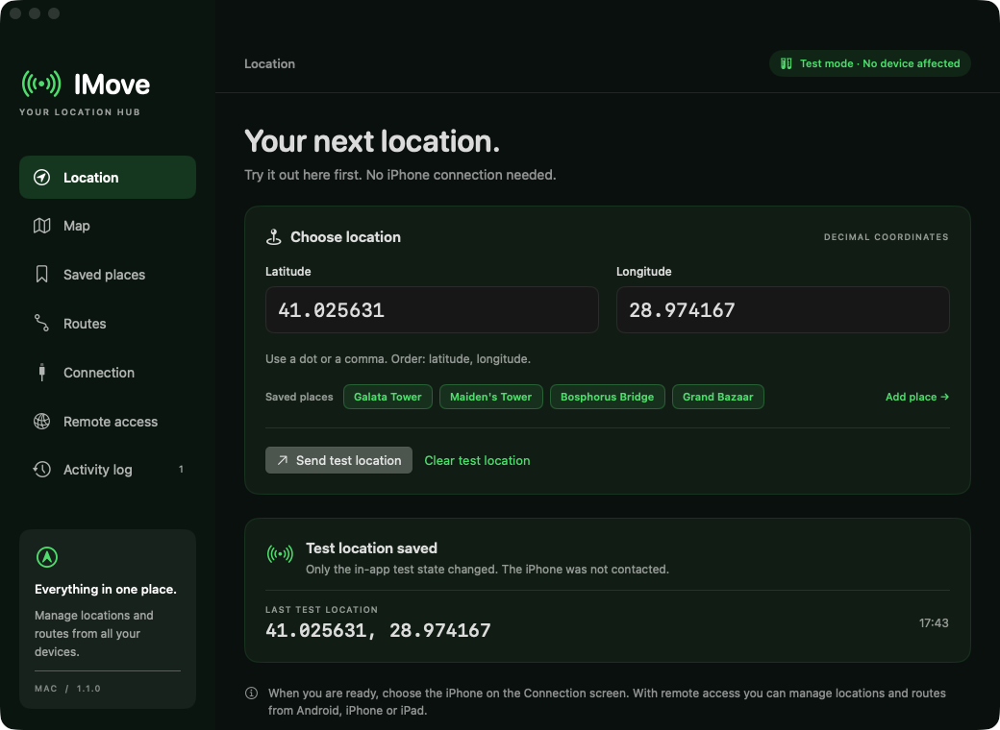
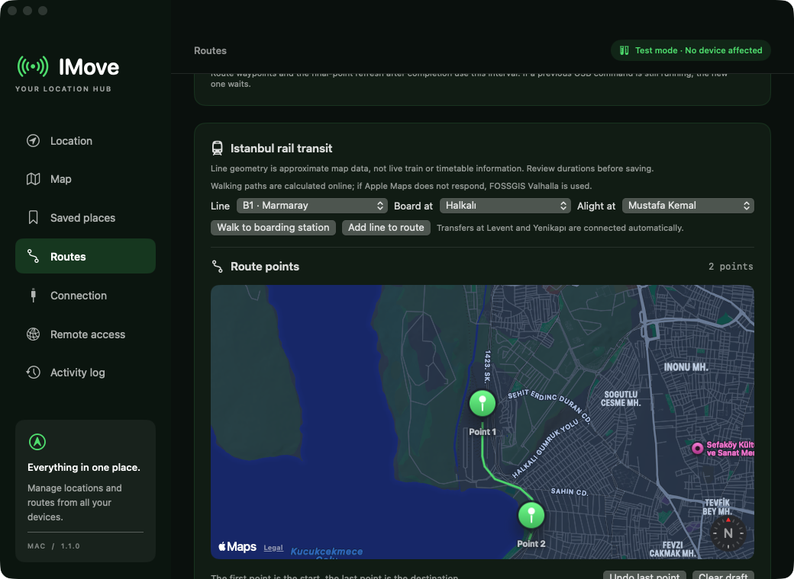
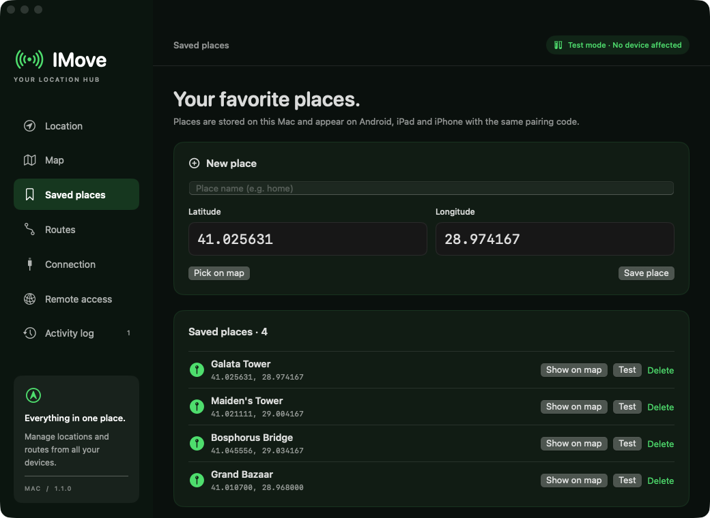

Control the simulated location of a USB-connected iPhone from your Mac. Send locations, saved places and routes from a Mac, Android, iPhone, iPad or any browser.
The Mac app sends locations to the iPhone over USB. Other devices reach the Mac over a private Tailscale network using a 32-character pairing code.
Android, iPhone, iPad or a web browser
Places, routes and control server
Simulated location applied
Type a coordinate or pick one on the map. The location is refreshed over USB every 1–60 seconds.
Give each segment its own minutes and seconds, or split the total time evenly. Reshape the path with waypoints.
B1 Marmaray, M2 and M6 stations, plus the Yenikapı and Levent transfers, in an offline catalogue.
Walking paths follow Apple Maps pedestrian routing. If Apple Maps does not respond, FOSSGIS Valhalla is used.
Places live on the Mac. Android, iOS and the web all see the same list as shortcuts.
Connections only happen over a private Tailscale network. The pairing code is stored in the Android Keystore and iOS Keychain.
Built with SwiftUI and MapKit, with a test mode that never touches a real device.



The main app. The USB tool is bundled, so there is no Python to install. Requires Apple Silicon and macOS 14 or later.
ZIP · 50 MBLocation, map, routes and phone tracking. Full-screen map with dark and light styles.
APKA SwiftUI app for iPhone and iPad in a single Xcode project. Sign it with your own developer team to install.
Xcode projectThe control page served by the Mac. Opens in any browser on your private network, with nothing to install.
SourceUnzip the download and move IMove.app to Applications. If macOS warns on first launch, right-click the app and choose Open.
Plug it in over USB and unlock it. Scan for and select it on the Connection screen, and mount the developer image if asked.
Start the control page from Remote access, then run this on the Mac:
tailscale serve --bg 8765